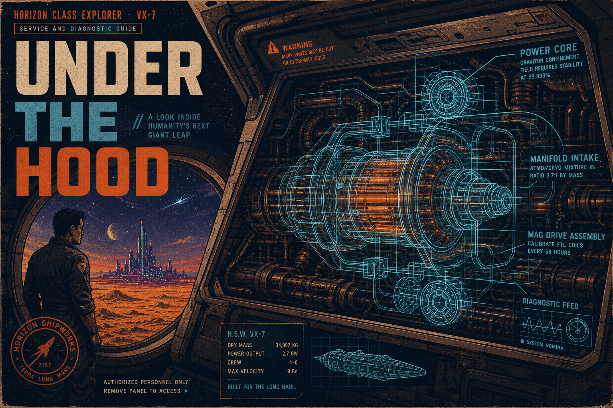

Engine room · plain talk
Look under the hood
Digital Pru is our name for the holographic GPU layer — a new kind of compute stack (not a graphics card). This page is for everyday people who want to know: does it actually run?

This is operational — today
You can listen on the Sovereign Player, get a members pass on honor ($16.18/mo), upload tracks, and use the catalog without reading a single paper. The ship is live on this website — not a slide deck, not a promise for later.
The center stays thin: small pipes that verify and route. Your pass, playlists, and taste stay on your device. That is the operational contract.
Plain speak · tap for the full write-up
-
What the holographic GPU layer is
FractiAI builds what you touch — music, passes, the player. Digital Pru names the layer underneath: how signal becomes proof you can check (compile output, honor rails, catalog merge). Same ship, two doors.
Start here How the ship runs on your edge Lite edge, intelligent pipes, sovereignty — full onboarding brief. Open whitepaper → -
Your pass and your music stay with you
Board on honor (Venmo, PayPal, or Cash App). No corporate checkout. We do not run a member warehouse in the cloud. Playlists and prefs live in your browser unless you choose to download a track.
Fair Exchange Passes, pipes, and what we do not store The honest edge contract in one document. Open whitepaper → -
Proof you can try in the browser
Juicy Juicy Snap is the live demo: feed it input, get two JSON artifacts back, or a clean abort. That is metabolize → crystallize → animate in plain English — show your work, not hand-waving.
Live proof Snap compile · OFC walkthrough Step-by-step compile proof for the holographic GPU layer. Open whitepaper → -
What we claim vs. what is story
Solar flares and φ show up in the canon as color and timing — not as a weather forecast for your roof. This paper draws a bright line: operational fact, metaphor, and what would need real instruments.
Honesty Resonance notice Claims, metaphor, and instruments — spelled out. Open whitepaper → -
The long story (optional)
DNA / PEFF master canon is the deep narrative spine. Read it after you already know the ship runs — not before you press play.
Deep read Master canon · DNA / PEFF Full Digital Pru narrative for those who want the whole arc. Open whitepaper →